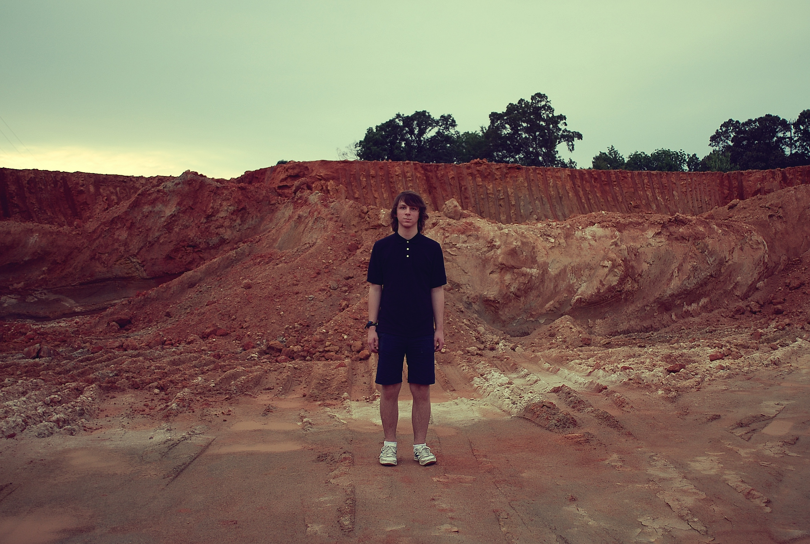
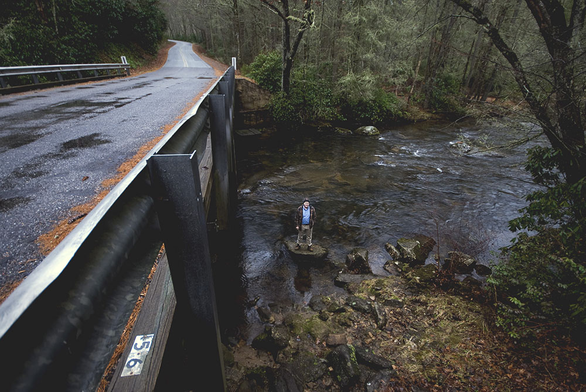
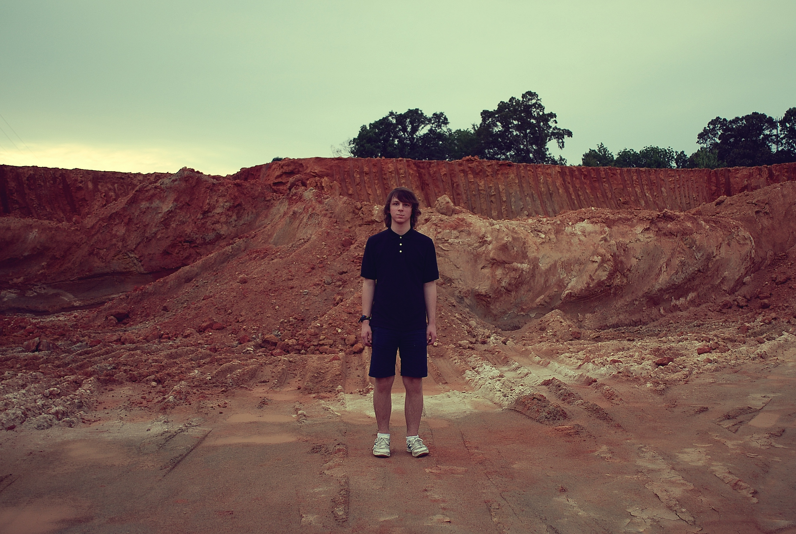
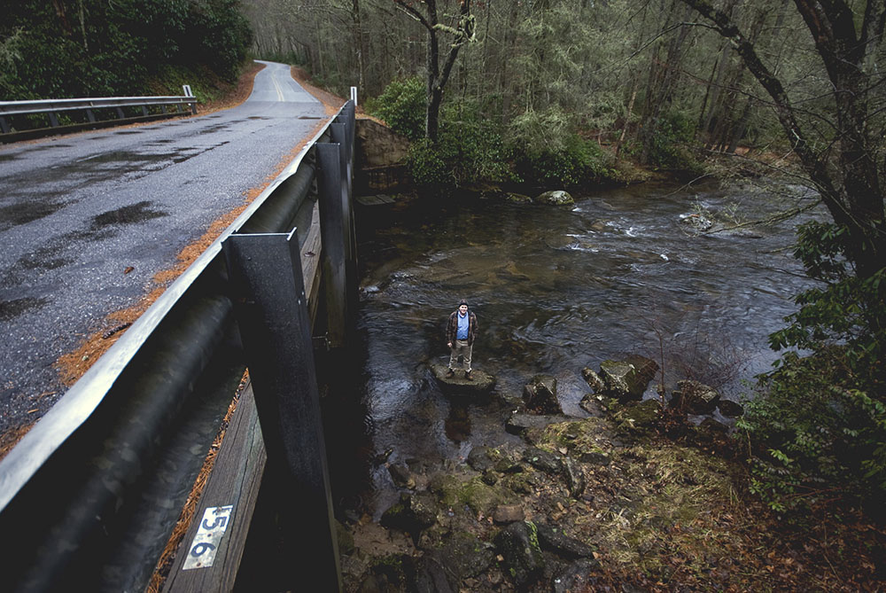
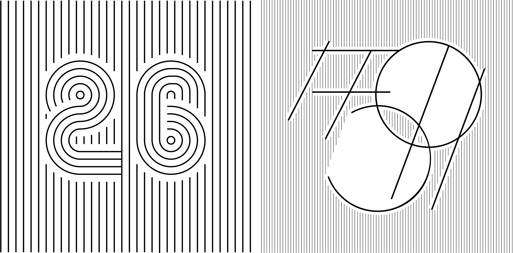
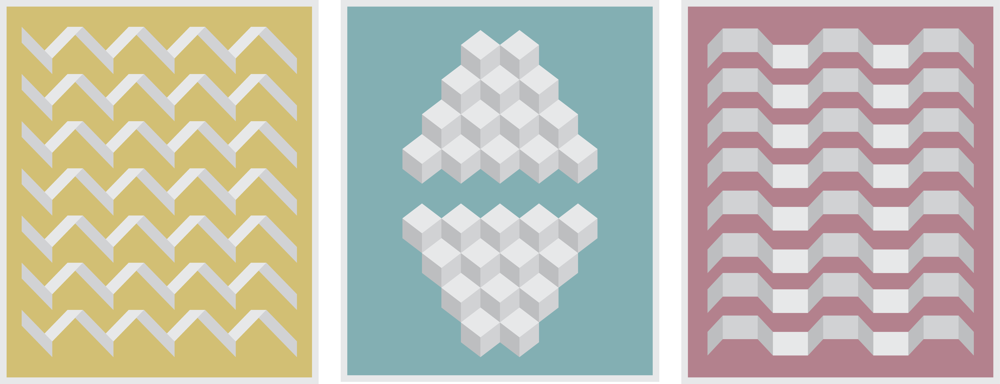
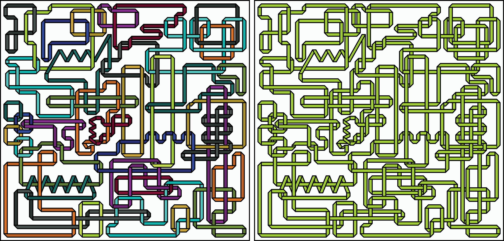
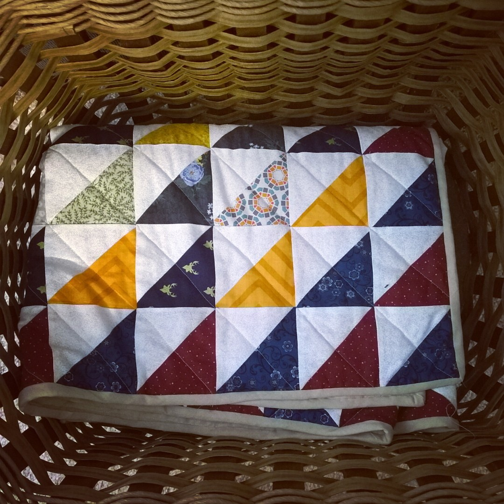
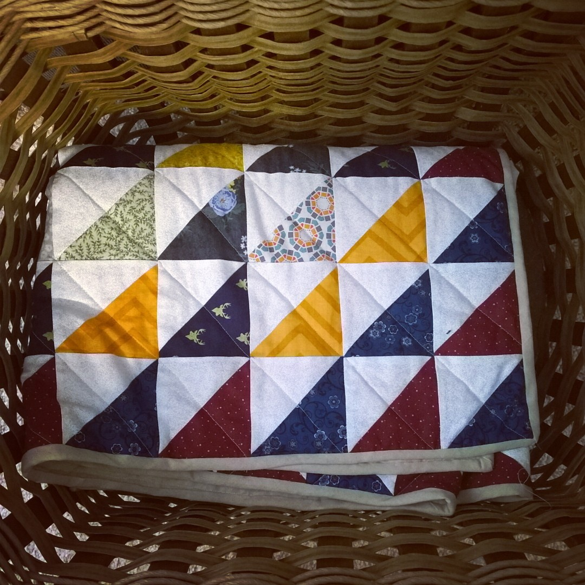
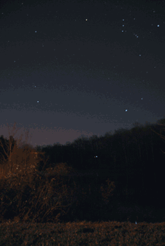

about
Things I do: web and mobile UI/UX, photography, design, quilting, printmaking, and live in NYC Things I've done: earned my BS in Genetics from Clemson University (2014) Things I like: learning new things, art, sewing, bad movies, my cat Davey, traveling, scrabble, dogs, camping & hiking, building things
photos
 



then/now 2001-2014
a series of double-exposed frames telling a story of nature and life from childhood to adulthood. 35mm film.


designs
26/59 experimenting with lines and numbers - 2016
Ideas for quilt designs; muted primary colors and shadows - 2016

A simple type inspired by folding paper - 2012
Playing around with colors and overlaps - endless possibilities - 2015
 

Traditional half-square quilt, machine sewed and quilted - 2016

Experimenting with cinemagraphs - 2014